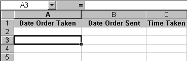
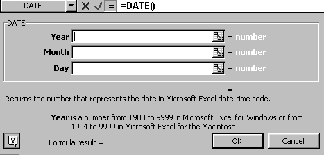
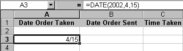
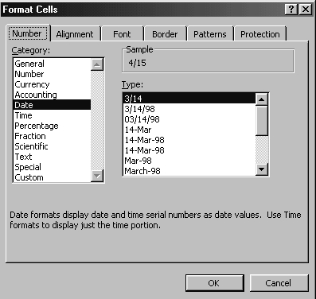
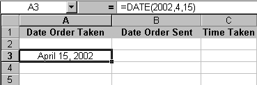
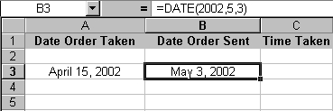
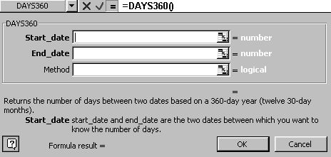
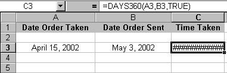
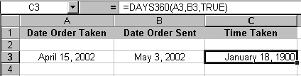
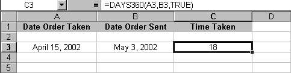

Free
computer Tutorials
|
Free
computer Tutorials
|
|
 HOME
HOME
|
Stay at Home and Learn | |||||
How to use the Date Functions in Excel
There are a numbers of different reasons why you would want a Date or Time function in a spreadsheet: If you're running your own company, you might want to record when an order was received and when it was processed. You could then calculate the difference between the two, so that you check how fast the orders were being processed. We'll do that now.
Date FunctionsSet up this simple spreadsheet in Excel  Click inside cell A3. To enter a date Function, do the following:
 What Excel wants you to do here is to enter some figures for the date. So:
 Notice how the date Function is set out in the Formula box. It is set out as =Date(2002, 4, 15). However, in cell A3 the date is 4/15. It has missed out the year completely! Is there anything we can do to resolve the matter? The reason Excel has missed the year out is because of the way cell A3 was formatted. To change the formatting of cell A3 (or any cell), click on Format form the menu bar. From the drop down menu, click on Cells. The format dialogue box appears. Click the Number tab strip at the top. Under Category, click on Date. A list of different date types appears in the Type list. The following picture shows this:  The Type section of the dialogue box is where you set how you want your date to look. At the moment, the first option is selected 3/14. Scroll down and click on March 14, 1998. Then click the OK button at the bottom. Your spreadsheet will now look like this one:  In cell B3, for the Date Order Sent, enter another Date Function. This time, have the date read May 3, 2002. Your spreadsheet will then look like this:  In cell C3, under Time Taken, we'll work out how long the order took to be sent out.
The Days360 Function in ExcelThe Function to use when you want to work out how many days difference there are between two dates is the Date360( ) function. So click on cell C3 and do the following:
 What Excel is looking for here is two dates: a start date and an end date. Our start date was in cell A3, and we can just enter the cell reference here. So click inside the Start_date box and enter A3. Next, click inside the End_date box and enter B3. Click inside the Method box and enter True (This will ensure that Excel calculates from the European date system.) Click the OK button when you're done. Your spreadsheet might look like the one below:  If your spreadsheet has all of those hash symbols in cell C3 it means that your column is not wide enough. So widen the C column until it takes all the date. Your spreadsheet might then look like this one:  As you can see, something has clearly gone wrong. Cell C3 reads January 18, 1900. The reason it is showing such a bizarre answer is because of the way the cell is formatted. We have C3 formatted as a date. But the answer to our Days360( ) function is not a date. The answer is a number. So we need to reformat that cell. Format the cell C3 so that it is a number, and set the Decimal places to zero. Your spreadsheet will then show the correct answer, like the one below:  Entering dates can be fairly straightforward, like cells A3 and B3. But performing calculations with dates can be slightly more complex. To get you some more practice, try this exercise.
ExerciseThe Mayor or Evercrease celebrates his official birthday on the 28th of June (Nobody knows his unofficial one). Work out how many days there are left to the Mayors official birthday party. After all, you are invited, so you need to start saving for his present. To get the current date, you can use this function: =Now( ).
You can then format the cell to get the date format you prefer.
In the next part, we'll take a look at the Time Function. Explore the Time Function in Excel
--> <--Back to the Excel Contents Page
|
||||||
|